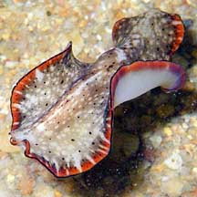
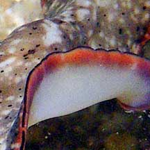

|
|
| flatworms text index | photo index |
|
worms > Phylum Platyhelminthes >
Class
Turbellaria > Order Polycladida
|
| Damawan
flatworm Pseudobiceros damawan Family Pseudocerotidae updated Feb 2020 Where seen? Sometimes seen on remote reefs and also seen by divers on our reefs. Features: 8-10cm long. Body mottled grey and white background with tiny black spots. Thin black margin and wider orange margin crossed with white bars. The middle of the body usually raised with a light white stripe along the length. The underside white with a wide orange and thin black margin. It has a pair of pseudotentacles that are squarish and ruffled on the sides. |
|
 Pseudotentacles squarish, ruffled on the sided. |
 Underside white with broad orange and thin black margin. |
|
Acknowledgements
References
|